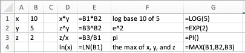

Excel is used in the business world. (More precisely, the spreadsheet is the standard tool, and Excel is currently the de facto standard brand. Most of this text can easily be used with other spreadsheets.) However, we do not assume that the student has worked with Excel previously. Throughout the course we will introduce those features of Excel we need to do mathematics and model the business problems we encounter.
While introducing Excel, we will also introduce rules of “Good Excel practice.†In a business environment, spreadsheets should be written so that someone else can easily understand the worksheet, and maintain it for future use. You should assume those same standards when submitting work in Excel.
This section is meant as an introduction to several standard features of Excel we will use often. These include:
Basic Arithmetic such as add, subtract, multiply etc.
Show formulas: allows us to check if the formulas in the cells are what they should be.
Quick fill: this feature takes a pattern and fills it across a column or a row.
Relative and Absolute Reference: when do we refer to a fixed cell and when does the reference depend on our place in the spreadsheet?
SUM(): Adding a large number of cells can be efficiently done with this feature.
Subsection1.3.1Basic Arithmetic, show formulas and quick fill.
Figure1.3.1.Video presentation of this example
We start with an example that covers basic arithmetic. Assume we are given the following worksheet:
From data we would like to compute the figures for the quarter (add the three months), the monthly profit (revenues-cost), and the monthly unit costs (costs/ units sold).
With the formula ribbon, we go to show and select Show Formulas. Since we want the worksheet to be readable by others, we add labels for the quantities we are computing, and in each cell we enter the formula for the quantity. The formula bar tells us which cell has been selected and the formula for that cell. It is generally easier to edit a formula by using the formula bar.
In this example, we have used several different ways of writing the formula. In cells E2, B6, and B7 we simply typed in the equation like we would on a calculator. Thus the profit for January is Revenues — Costs, or 3600-2700. Since we want Excel to compute this value, we put an equals sign at the start of the formula.
In cells E3, C6 and C7, instead of typing the values, we use a reference to the cell where the value is kept. This allows us to change the raw data and have Excel automatically recompute the quantities that were derived from those numbers.
In cells E4 and E5 we use Excel’s SUM command. In cell E4, we are taking the sum of the values in the cells from B4 through D4. We will come back to commands in Excel later in the section.
Figure1.3.2.
If we unselect Show Formulas, we see the values that Excel computes.
We want to finish our assignment by computing the Profit and Per Unit Costs for March and for the Quarter. However, we would prefer not to type any more formulas. (Typing in four more cells is not so bad, but we can imagine being told to do this for several years of data.) We will use a process called Quick Fill, that tells Excel to repeat the same formula, with the cell references appropriately modified.
To do the quick fill, we select the cells we want copied.
We can move the cursor until the cell(s) show the fill handle. This will change the symbol in the corner of the cell to a thin dark ‘+’.
We then drag the little blue box at the lower left corner of the box of selected cells. Excel automatically fills in the new values.
We look back at the formulas and see that Excel has produced formulas where cells are in the same relative position. Profit is the value from the cell 4 rows higher minus the value of the cell three rows higher.
There is a last detail to fix in our report. The quantities in profit and Per Unit Cost are in money, so we want them formatted correctly. (They should start with a dollar sign, have a decimal point, and stop at two decimal places or cents.) We do this by selecting the cells and then formatting the cells as currency.
If we use the quick fill on a pair of numbers, Excel produces an arithmetic sequence. A pair of cells containing 1 then 4 becomes the start of a sequence 1, 4, 7, 10, … .
Subsection1.3.2Absolute and Relative Cell References
Figure1.3.3.Video presentation of this example
One of the reasons that spreadsheets are so useful for doing mathematics in a business setting is that businesses often do a relatively simple computation for a large number of cases. That means we should pay attention to formulas with cell references and the process of copying a formula from one case to another. In the example above, all of the values change from one month to the next. It is not hard to imagine a calculation where some values remain the same for many cases. Thus we want to look at the idea of absolute and relative cell references. This is a very important topic and an Excel feature we will be using for the rest of the term.
Consider the following example: Your rich uncle, Fred, decided to give you 10 shares of Google stock (GOOG) on January first 2009, with the option of receiving instead the same value in either Microsoft (MSFT) or Apple stock (AAPL). You would like to see the monthly change in value of the portfolios over a three-year period.
We start by going to finance.yahoo.com and collecting the monthly prices of the stocks, downloading the answers into a spreadsheet. When we look up historical prices from Yahoo, we are interested in the adjusted closing price. (They adjust the price to account care of splits and dividends.) That produces a spreadsheet like the one below.
Next we want to compute the number of shares for each stock. This is 10 times the closing price of Google divided by the closing price of the stock we selected.
In the formula for the number of shares of MSFT, we used $B$3 for the initial price of GOOG. This is an absolute cell reference. When we copy the formula from cell C1 to cell D1, the formula changes from =10*$B$3/C3 to =10*$B$3/D3. This formula in cell D1 asks for 10 times the value in cell B3, divided by the value in the 2 rows below the cell of the formula.
Absolute references refer to a particular column and/or row. The dollar sign ‘$’ is used to fix the reference.
Relative references refer to the cell the same distance away from the cell containing the formula.
Partial absolute references, like $B3and B$3, are absolute in either the row direction or the column direction and relative in the other direction.
We continue our example by computing the change in value of our GOOG portfolio in the first month. That will be the share price at the beginning of the next month minus the share price at the beginning of the month, times the number of shares. For January 2009, for GOOG this becomes =(B4-B3)*B$1.
Since we have properly used relative and absolute references, we can now copy this formula to complete the chart, and Excel will modify the formula appropriately.
We note that the rows and columns can be independently made absolute or relative. Thus if we are looking at a formula in cell A1, and see a reference to B2 it means the cell one below and to the right of the location of the formula. If we see $B2 it means the cell in column B that is one row down from the formula. If we see B$2 it means the cell in row two that is one column to the right of the formula.
When we convert back to see the values, we see that an original investment of $3,385.30 would have made a profit of $3,073.70 in GOOG stock, $2,128.02 in MSFT stock and $11,826.60 in AAPL stock. Once again we use the SUM function and a cell range to add the values in the column. We also use the split screen icons in the scroll bars to be able to see the correct rows and columns.
Note: Excel can also make references across multiple pages of a workbook, but we will not need that capability for this course.
Subsection1.3.3Named Cell References
An alternative to using absolute references in formulas is to name the cells.
By default, Excel names each cell by its row and column. We can use the name cell in the upper left corner of the Excel sheet to change the name from the letter/number format into a descriptive name.
The more descriptive name can be useful when constructing and documenting the process we are using for our computations. Consider the previous example with the rich uncle. In cells B1, C1, and D1, we had the number of shares of Google, Microsoft, and Apple we could have had in the portfolio. Better names for those cells would then be SharesGOOG, SharesMSFT, and SharesAAPL. We can name a cell by editing the name box at the left side of the formula bar.
Figure1.3.4.
We can then use the names in formulas. In general, the formulas with nicely named variables are easier to read.
Figure1.3.5.
Subsection1.3.4Getting Help
One of the ways that doing mathematics with a program like Excel differs from working with a calculator is that computer programs have help features. It is worthwhile pointing out two that come with Excel. We illustrate both with the SUM function we have used a number of times.
When we call Help from the top menu, we are given a pop up window for Excel Help. It has a number of topics listed by default. It also has a bar for searching topics.
We type the name of the command we are looking for and we are given a page of help for that command.
A second kind of help is the formula builder from the formula ribbon. It gives a more concise help when you do not remember the exact syntax of a command.
A third source of help is simply to do a web search for Excel help. To find how to do a computation with an exponential functions you can search for “Excel formulas exponential.”
Subsection1.3.5Other Details
Excel is a rich and complex tool. We will be looking at more features as we go through the course. There are several that are worth pointing out explicitly at this point.
For ordinary arithmetic, Excel uses the standard symbols of +, -, *, /, and ^ for plus, minus, times, divided by, and raising to a power.
We can also use the SUM, PRODUCT, QUOTIENT, and POWER commands for ordinary arithmetic.
The order of operations used by Excel differs from the traditional order of operations when it comes to taking powers of negative numbers. The problem is illustrated in evaluating \(-3^2\text{,}\) which has a negative sign and an exponentiation. In all math classes you have taken this is interpreted as \(-(3^2)\) or \(-9\text{,}\) with exponentiation done first. In Excel, this is interpreted as \((-3)^2\) or 9, with negation done first. When in doubt, use parenthesis to make the order of operations explicit.
Excel also has the other mathematical functions you have used before. The functions for square root, log base 10, log base \(e\text{,}\) and \(e\) to the power of, are respectively, SQRT, LOG, LN, and EXP.
The value of \(e\) is represented by EXP(1).
Excel has a number of very useful operations on collections of numbers. We start with easy ones where the name is self explanatory, like SUM, AVERAGE, COUNT, MIN, and MAX.
Reading Questions1.3.6Reading Check
1.Reading check, Functions in the Business Setting.
This question checks your reading comprehension of the material is section 1.3, Introduction to Excel Spreadsheets, of Business Calculus with Excel. Based on your reading, select all statements that are correct. There may be more than one correct answer. The statements may appear in what seems to be a random order.
We can name cells to make formulas easier to read.
Absolute references refer to a particular column and/or row. The dollar sign ’$’ is used to fix the reference.
Relative references refer to the cell the same distance away from the cell containing the formula.
Excel can format an answer as currency.
There is only one correct way to add up three quantities with Excel.
Absolute and relative cell references can be used interchangeably.
We can only check the underlying functions one cell at a time.
In Excel, \(e^x\) is written EXP(x).
None of the above
Exercises1.3.7Exercises Introduction to Excel Spreadsheets
1.
Produce a spreadsheet where the first 100 rows are used. The cell in row n and column A should have value n. The cell in row n and column B should have value 2*n. You should be able to do this by typing in the value of 4 cells and using quick fill.
Solution.
The formulas entered should look like this:
Once we quickfill and have the regular view (not showing the formulas)
The actual spreadsheet has 100 rows.
Note that there is a small window that shows how far the quickfill has gone.
If you want to check the formulas used you go to the “Formula†menu and choose “Show formulas”. This feature is good for debugging any problem that may happen.
2.
Produce a spreadsheet where the first 100 rows are used. Column A should contain the first 100 odd numbers. Column B should contain multiples of 7 starting with 21.
3.
Start with the worksheet given. Complete the worksheet in such a way that if the values of x, y, and z are changed, the other values are automatically recomputed.
Solution.
We do not need to use absolute references in this case, but when we are computing something involving the \(x\text{,}\)\(y\) and \(z\) values we should refer to cells B1, B2, and B3 respectively.

The spreadsheet should have entries as shown above.
4.
Produce a spreadsheet where the first 101 rows are used. Row 1 should be used for labels. Column A should contain integers from 1 to 100. Columns B through F should contain the squares, cubes, square roots, logs base 10 and natural logs of the entries in columns A.
5.
Start with the spreadsheet section below.
If column E is copied and pasted into column G, give both the formula and value for each non-empty cell in column G.
Solution.
Any entry that is absolute (with a $) will be fixed. The relative references (without the $) will change all the Bs to Ds because we moved over 2 columns.
Formulas
Entries
6.
We would like to really understand what happens when we use quick fill.
Let’s consider the entries =A1, =$A1, =A$1, and =$A$1 in row 2. Do quick fill below to fill in 3 more rows and see what happens. Clearly in the first row these cells all now point to cell A1 and the value returned is 1. After the first row we get a mixture of values. Why?
Next, we can set up the values in column D. Do quick fill to fill in the 3 columns to the right? Explain the pattern of values we see.
7.
Complete the spreadsheet section below so that columns A through C are complete for numbers 1 to 100. (The value for a should be a random number generated by the formula in cell E1.)
Solution.
The random number will differ from person to person, but the Excel entries are as follows. Note that we need to use an absolute reference for the value of a!
Formulas
The entry in C2 could also have been given as =A2^2+$E$1.
Just E$1 will work as well. We are filling down so we really need to fix the row in this case.
In this version the random number settled on \(-6\) (yours is likely different) and the first part of the table looks as follows. The actual answer has all 100 rows completed.
8.
Using the help functions to check syntax, write a formula for cell B2, that looks at the value for cell A2, and if it is negative, returns the square of it, and if positive returns its square root.
9.
Using your favorite source on the web create a spreadsheet that has the closing price of your favorite stock on the first day of the month for the past 5 years. Compute the change in adjusted stock price for each month and identify which month had the greatest increase. (http://finance.yahoo.com/ 3 ) is one source for such data.)
Solution.
For example if we type in Coca-Cola we get to “The Coca-Cola Company (KO)”
From the menu on the left choose “Historical Prices†and pull the monthly data from the past 5 years. Then scroll down and download to spreadsheet.
Using the Adjusted close we compute the change:
The above partial table shows what the table should look like.
Using the MAX function for this data the biggest change is $3.39.
Finding the month can be done by inspection as this point (there are more sophisticated ways to do this, but that requires rather advanced Excel commands). In this instance the greatest change took place in December 2013.
10.
Using your favorite source on the web create a spreadsheet that has the closing price of your favorite stock on the first day of the month for the past 5 years. Compute the percentage change in adjusted stock price for each month and identify which month had the greatest increase.
11.
Create a spreadsheet showing the Consumer Price Index by month from 1930-2010. (Good sources are http://inflationdata.com/ 4  and http://www.bls.gov/cpi/ 5  at the Bureau of Labor Statistics.) Compute the percentage change between January and July for each year. Which year had the greatest percentage change in the first half of the year?